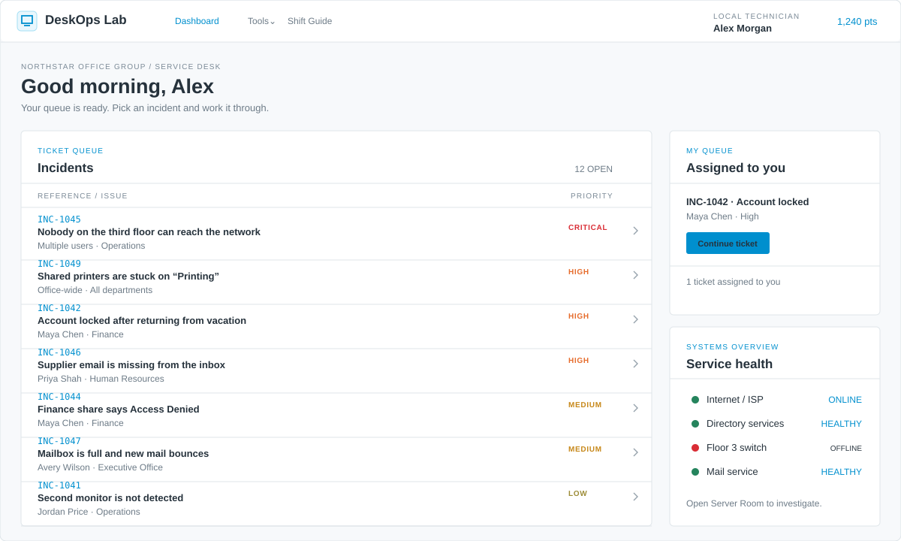
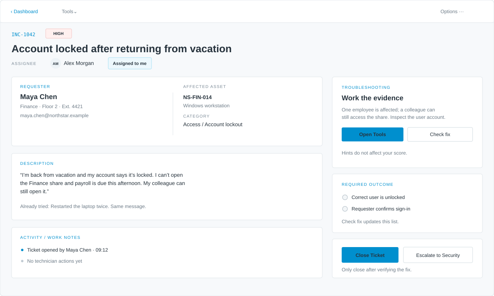
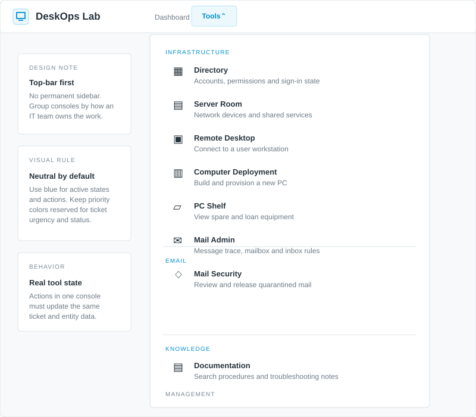
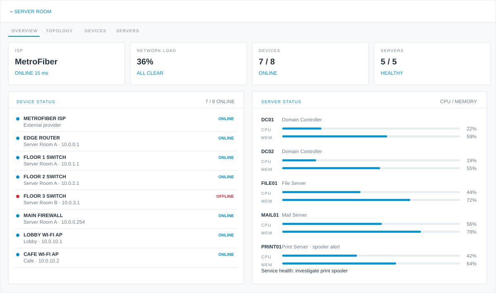

How to use this page: Review the local DeskOps Lab mockups first. The reference-site images below are remote links and need internet access to display. They are included for research only; do not ship them inside the finished game. The playable deliverable must be a self-contained offline
index.html.Local original mockups

Original schematicDashboard / incident queue
Compact rows with title, requester, priority and a narrow supporting system-health panel.

Original schematicTicket detail and resolution
Requester context, description, asset, activity, objective checklist and clear ticket actions.

Original schematicCategorized tools menu
Top-bar popover grouping consoles by Infrastructure, Email, Knowledge and Management.

Original schematicServer Room overview
High-signal status cards, device table, CPU/memory meters and state-aware actions.